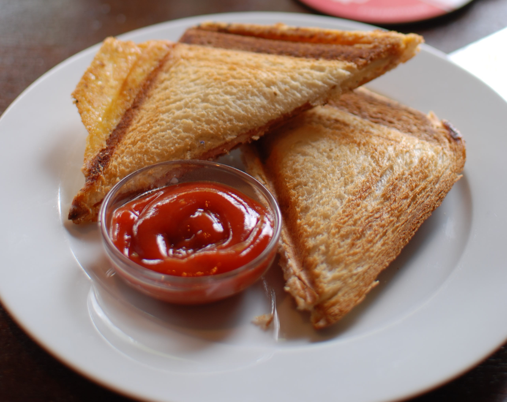

Tosti

Description
A tosti is a traditional Dutch dish that takes minutes to make. Even your children can make this dish. Yet it is still delicious.
Ingredients
These ingredients are for one tosti:
- Two slices of bread;
- One slice of cheese (around 25 grams);
- around 10 grams of (margarine) butter;
- Curry or tomato ketchup however much you like.
Steps
These are the steps to a tosti:
- Spread out the butter evenly on both slices
- Add the cheese on top of one slice
- Add the other slice on top of it to make a sandwich
- Put the sandwich in a sandwich maker
- When the cheese is melted and the bread is crusty, then you have a tosti!
- Put the tosti on a plate and add some sauce if you like
Home